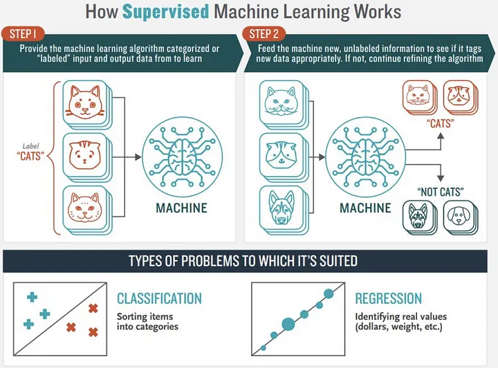
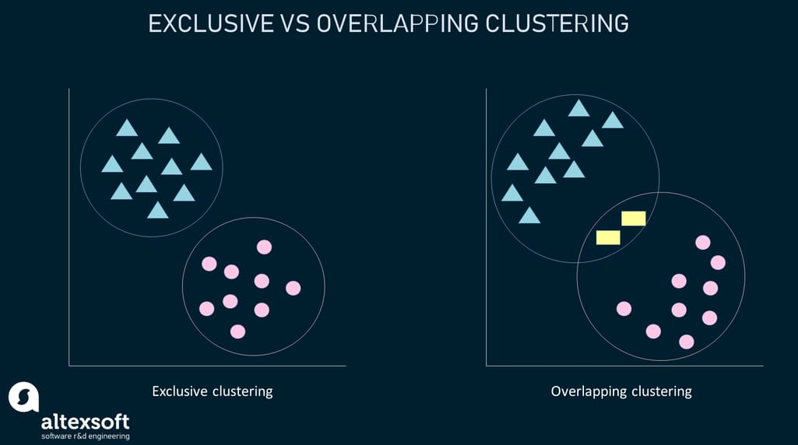
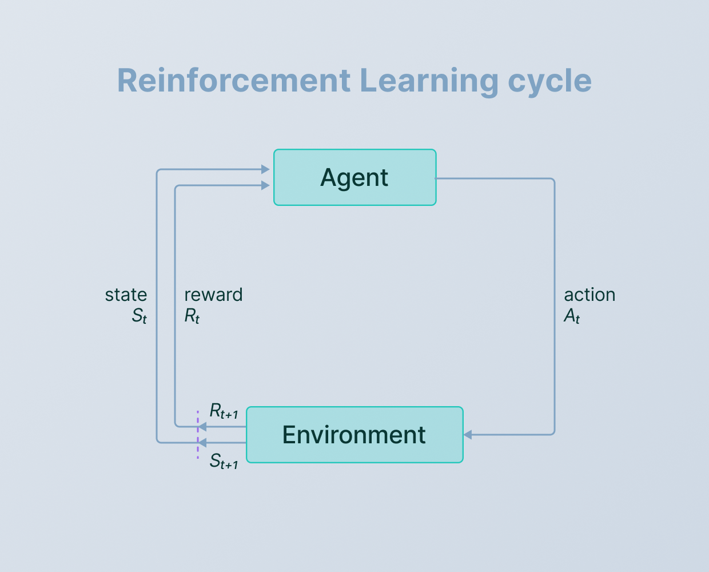
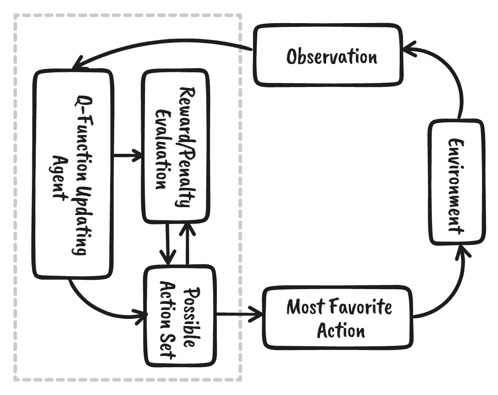

Supervised Learning
Supervised learning is a machine learning technique where an algorithm is trained on labeled data, meaning the input data has corresponding correct output labels. The algorithm learns to map the input data to the output labels, and can then use this learned model to make predictions on new, unseen data. The key steps are:
- Collecting labeled training data
- Choosing an appropriate machine learning model
- Training the model on the data
- Evaluating the model's performance and iterating as needed
Supervised learning powers many real-world AI applications like image classification, spam filtering, and predictive analytics.
Learn more
Classification
Classification is a supervised machine learning technique that assigns input data to specific categories or classes based on patterns in the training data.
Regression
Regression is a machine learning technique that predicts a continuous numerical output, unlike Classification which predicts discrete categorical labels.
Learn more differenceUnsupervised Learning
Generative AI models, like those used in unsupervised learning, work by learning the underlying patterns and distributions in data without being explicitly programmed. They can then generate new, realistic-looking data that is similar to the training data. This is done by training the model on a large dataset, allowing it to learn the complex relationships and structures within the data. The model can then use this learned knowledge to generate new, synthetic samples that capture the essential characteristics of the original data. This makes generative AI a powerful tool for tasks like image synthesis, text generation, and audio creation.
Learn more Clustering
Clustering is an unsupervised machine learning technique that groups similar data points together without any pre-defined labels or categories.
Dimensionality Reduction
Dimensionality Reduction is a technique in machine learning that aims to identify a reduced set of features or dimensions that can effectively represent the original high-dimensional data without significant loss of information.
Reinforcement Learning
Generative AI systems work by using machine learning techniques, particularly reinforcement learning, to generate new content such as images, text, or audio. In reinforcement learning, the AI model learns by receiving rewards or penalties based on the quality of the outputs it generates, allowing it to iteratively improve its ability to create realistic and coherent content. The model is trained on large datasets, and through trial-and-error, it learns to produce outputs that maximize the desired characteristics, resulting in the generation of novel and compelling content.
Learn more Markov Decision Processes
Markov Decision Processes are a mathematical framework for modeling sequential decision-making problems under uncertainty, where the future state depends only on the current state and action, not on the past.
Q-Learning
Q-Learning is a reinforcement learning algorithm that learns to predict the optimal actions to take in a given state by updating a "Q-value" that represents the expected future reward for each possible action.
Learn more 